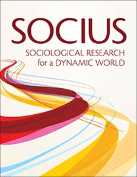
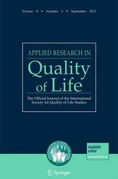
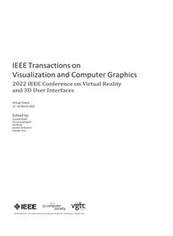
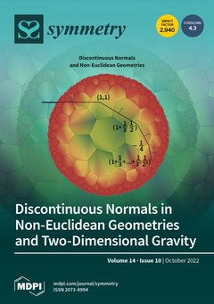
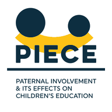

2026The Division of Labour and Female Partners' Relative Pay across Phases of Parenthood: Evidence from UK Dual-Earner Couples
DOIPhD candidate in Social Statistics at the University of Manchester. My research runs in two streams. One is my doctoral work on time use, gender, and the division of labour among UK dual-earner couples. The other is computational social science, where I am currently applying models such as word2vec, transformers, and variational autoencoders to sociological questions.
My doctoral research, funded by the UKRI North West Social Science Doctoral Training Partnership, uses UK longitudinal and time-use data to examine how paid work, domestic work, and parenthood structure the daily lives of dual-earner couples. I draw on multi-channel sequence analysis, multilevel modelling, and structural equation modelling.
Alongside that, I am developing a strand of work on AI literacy and computational social science. One project examines the social stratification of generative AI literacy, use frequency, and workplace acceptance across eleven European countries. A second uses decade-specific word embeddings to measure where everyday places sit on cultural dimensions across a century of American books, and how far that arrangement holds.
* Corresponding author

2026The Division of Labour and Female Partners' Relative Pay across Phases of Parenthood: Evidence from UK Dual-Earner Couples
DOI
2023Can Teleworking Improve Workers' Job Satisfaction? Exploring the Roles of Gender and Emotional Well-Being
DOI
2023Supervertex Sampling Network: A Geodesic Differential SLIC Approach for 3D Mesh

2022NGD-Transformer: Navigation Geodesic Distance Positional Encoding with Self-Attention Pooling for Graph Transformer on 3D Triangle Mesh
DOIExploring Physical and Mental Health in the Sandwich Generation Dual-Earner Couples: A Couple-Level Analysis
Mapping Couples' Daily Rhythms: A Multi-Channel Sequence Analysis of Time Use in UK Dual-Earner Couples
Return-to-Office, Back to the Past? Working On-site and Gendered Division of Labour among UK Couples
Gendered Daily Time-Use Rhythms and Subjective Time Pressure among Working Adults in the UK, 2016 to 2023
The Social Stratification in Generative Artificial Intelligence Literacy, Use Frequency, and Workplace Acceptance in 11 European Countries
SocArXiv preprintGendering American Everyday Spaces: Cultural Meaning and Social Valuation, 1900–2009
Fathers' work-life balance: why occupational class matters in the UK
Read
2025What influences fathers' involvement at school, and why does it matter?
Project siteDads and school involvement: could do better?
ReadTeaching Assistant at the University of Manchester, 2023 to 2026.
Undergraduate. SOST20131 Answering Social Research Questions with Statistical Models.
Postgraduate. DATA70121 Statistics and Machine Learning, and SOST70033 Data Science Modelling.
Peer reviewer for Humanities & Social Sciences Communications, Social Indicators Research, and Applied Research in Quality of Life.
Languages. Stata, R, and Python.
Statistical modelling. Longitudinal data analysis, multilevel modelling, structural equation modelling, multi-channel sequence analysis, survival analysis, latent growth curves, complex survey design, multiple imputation, principal component analysis, and multivariate imputation by chained equations.
Computational methods. Word embeddings (word2vec), transformer models, variational autoencoders, and natural language processing for social science applications.
I welcome enquiries about collaboration, teaching, and research.